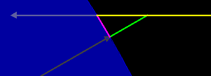

春/秋分正中午時的竿影
這個午時竿影的模型展示一個竿子 gnomon (綠色) 及受到正中午日照(黃色)所產生的竿影(粉紅)。 使用者可以改變桿子立著的方向、竿子所處緯度及一年中的任一天。竿子的長度及產生的影子隨著變化顯示在地球上。
這個午時竿影的模型是由Wolfgang Christian和Todd Timberlake用的Easy Java Simulations (EJS) version 4.2所製作的。
你可以操作及修改這個模型藉由雙擊jar檔案，右鍵點取並選擇 "開啟 EJS Model "，當然， 你必須先擁有EJS安裝在你的電腦。 關於EJS的資訊在 : <http://www.um.es/fem/Ejs/> 以及OSP ComPADRE collection <http://www.compadre.org/OSP/>.